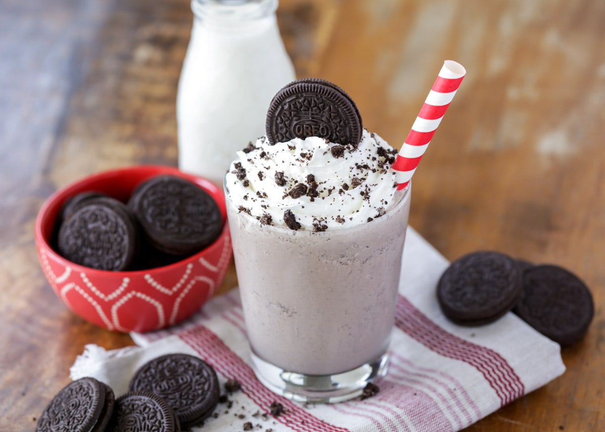

Történet
Könnyen és gyorsan elkészíthető, a híres Oreo sütikkel készített gazdag turmix egy nyári harapnivalót biztosít számunkra. Különböző gyorséttermi láncok is árulják, mint például a Burger King. Fogyasztásához szívószálat és kanalat egyaránt biztosítanak a félfolyós, kissé massza szerű állaga miatt, melyet többek között a benne található fagylaltnak is köszönhetünk. Ára eltekinthető abból a szempontból, hogy akár egy egész étkezést is kitehet.
Elkészítés
Az Oreo kekszek 1/2-ét kisebb darabokra törjük, majd a tejjel és a cukorral összeturmixoljuk, és egy pohárba öntjük. A maradék Oreo kekszet összemorzsoljuk. A shake tetejére tejszínhabot nyomunk, megszórjuk a morzsalékkal és hozzá adjuk a fagylaltot.
Hozzávalók
- 2dl tej
- 1ek cukor
- 3dkg oreo keksz
- 2ek tejszínhab
- ízlés szerint vanília fagylalt